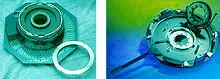
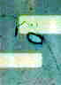

Probe/Trim
Wafer
probing is the process of
electrically testing each die on a wafer. This is done
automatically using a wafer
probing system (see Fig. 1),
which holds a wafer on a stable platform and drops a set of
precision point needles
on designated probe pads on the die. The probe system is usually
connected to an automatic test equipment (ATE) using special
interfacing
hardware (see Fig. 2), such that the electrical test during probing is
carried out by the ATE.
Probing is usually done one die at a time.
The needles provide the electrical contacts needed to test the die
properly.
Bond pads are also used as probe
pads. Probing is done to ensure that the wafer has no inherent
problems that may result in low electrical yields after the wafer has
been assembled into units, thereby saving assembly and test costs.
Figure 1.
Examples of Wafer Probing Systems
The
electrical test employed by probing may not be as extensive as
production electrical testing at post-assembly device level.
Nonetheless, probing must be able to
check
whether the dice on a wafer are functional and meeting critical electrical parameters. Good
probing systems can
map
the failing dice on a wafer, relating the position of the die on the
wafer to the failure modes observed.

Figure 2.
Examples of ATE Interfaces for Probe Systems
Probing
is also an expensive process, so it is usually dispensed with for mature
and stable products that are able to meet yield expectations despite
blind assembly.
Resistor trimming
is the process of adjusting the
resistance
value of a resistor on the die, and is achieved by burning 'notches' on
the resistor structure using a
laser
beam. Cutting across a resistor with a laser beam reduces the
resistor's effective cross-section, increasing the resistance value.
Resistor trimming is a
fine-tuning
step done to optimize the parametric characteristics of a device.
Resistor
trimming is usually done in conjunction with wafer probing, wherein an
electrical
parameter
measured
during probing is set within the
acceptable
range by adjusting the resistance value of the relevant resistor. Figure
3 shows an example of a wafer probe system capable of resistor trimming.
|
|
 |
|
Figure 3. A Wafer Probe/Trim System
|
Figure 4.
Photo of a laser trim void
|
Care,
however, must be taken when trimming a resistor since improper laser
trimming can result in passivation damage known as
'laser trim voids.'
These passivation breaches can allow moisture to enter the die circuit
and eventually cause die corrosion. Die
scratching
is another problem that an improper laser trimming set-up may introduce.
Wafer Fab
Links:
Incoming
Wafers;
Epitaxy;
Diffusion;
Ion
Implant;
Polysilicon;
Dielectric;
Lithography/Etch;
Thin
Films;
Metallization;
Glassivation;
Probe/Trim
See Also:
Microprobing;
IC
Manufacturing; Wafer Fab Equipment
HOME
Copyright
©
2001-2006
www.EESemi.com.
All Rights Reserved.